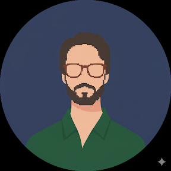

Técnico em Desenvolvimento de Sistemas
Minha trajetória é impulsionada pela integração entre as Ciências Humanas e a aplicabilidade prática da Tecnologia. Formação em Filosofia (Licenciatura, Mestrado e Doutorado em andamento — UEL) aliada ao desenvolvimento técnico em sistemas, programação e design.

// 01 — competências
// 02 — trabalhos realizados
Jogo interativo desenvolvido com p5.js, explorando animação, eventos de teclado e lógica de colisão em ambiente web.
Página pessoal estática construída com HTML5 semântico e CSS puro, apresentando informações de perfil e contato.
Aplicação web de cardápio interativo com layout responsivo e estilização moderna usando HTML e CSS.
Aplicativo nativo mobile de cronômetro com interface limpa, desenvolvido como tarefa prática de desenvolvimento Android.
Melhoria de design e funcionalidade de jogo de dado virtual mobile, com foco em experiência do usuário e animações.
Sistema web com integração de banco de dados MySQL via interface tabular, com consultas, relatórios e funções JSON avançadas.
Aplicação full-stack com back-end em JavaScript (Node.js) exibindo conteúdo de banco MySQL, e front-end construído com React (CRA).
// 03 — base teórica
Lógica de programação, algoritmos, POO, Node.js, HTML5/CSS3, frameworks modernos e múltiplas linguagens: Python, Java, Kotlin, JS, TypeScript.
SDLC, Waterfall, metodologias ágeis (Scrum, Kanban, Lean, XP), levantamento de requisitos, UML, UX/UI, testes unitários, TDD e BDD.
Modelagem conceitual, lógica e física de bancos de dados. SQL (MySQL, SQL Server) e NoSQL. Redes, segurança da informação e APIs RESTful.
Fundamentos de IA e machine learning, IoT, Design Thinking, modelos de negócios inovadores, marketing digital e planejamento de carreira.
LGPD, Lei de Software, ética digital, controle de versão com Git/GitHub e ferramentas de gestão de projetos como JIRA e Trello.
Licenciatura, Mestrado e Doutorado em andamento (UEL). Pensamento crítico, análise complexa, comunicação, didática e produção de conteúdo.
// 04 — fale comigo
Aberto a colaborações, projetos acadêmicos, estágios e novas conexões na área de tecnologia. Entre em contato — responderei assim que possível.